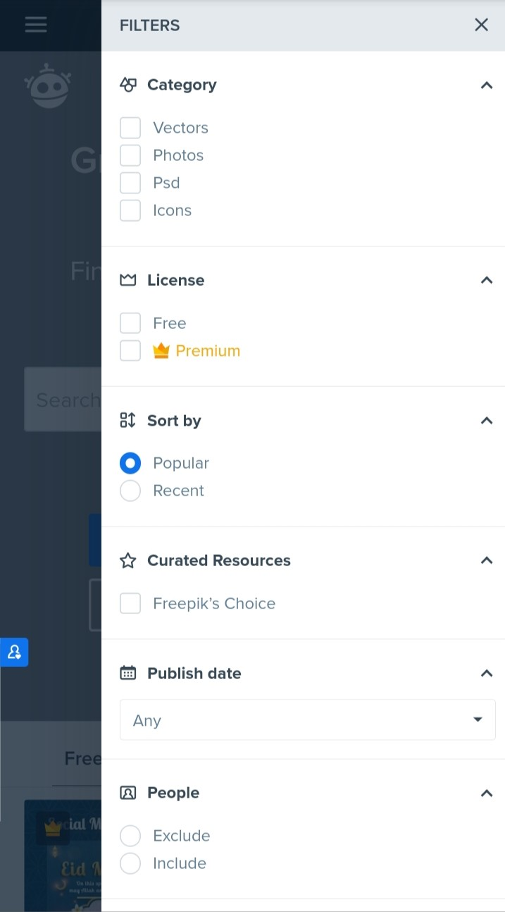
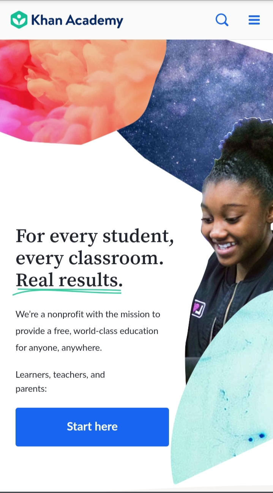
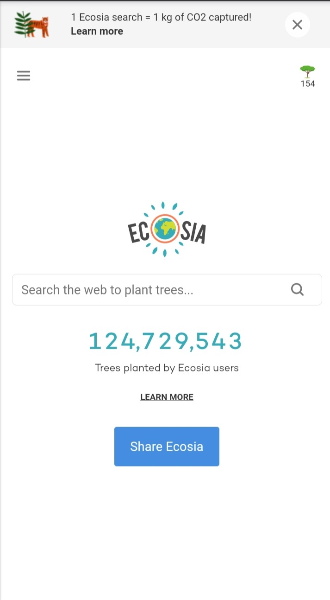

Fitt's Law
Freepik
Freepik is a website where users can get paid and free media resources. The touch targets of the site are very accessible. The home page shows a filter icon at the top right corner of the header. If the user clicks it, he/she will see that the options for filtering search results are very user-friendly. There is enough space in between touch targets that allows the user to make a more specific search.
White Space and Clean Design
Khan Academy
Khan Academy, an online learning website, has several elements on its landing page. Even if there are different elements like images and texts on the page, reading through it will not strain the user’s eyes. There is enough white space to allow the user's eyes to rest. And the elements were arranged in such a way that will catch the user’s attention.
Visual Hierarchy
Ecosia
Ecosia, a search engine that aims to plant trees, only has a few elements on its home page. The arrangement of the elements helps the user understand the aim and use of Ecosia. The user’s eyes are guided to the purpose of the website, which is to carry out web searches. The user can also see the number of plants Ecosia users have planted.